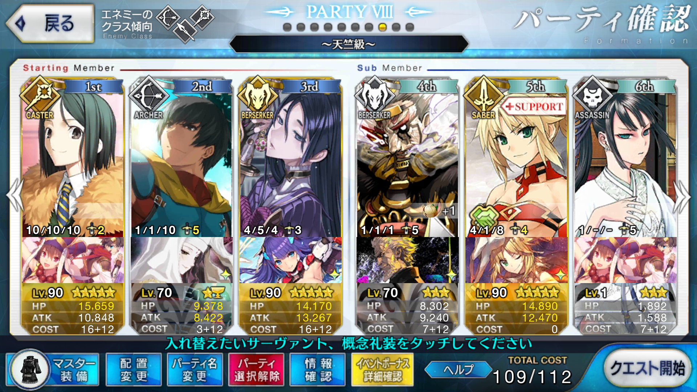

【FGO】復刻：星の三蔵ちゃん、天竺に行く ライト版 天竺級
この記事ではFGOイベントの周回を扱います。
編成画像にて最終再臨絵のネタバレがあるのでご注意を
基本方針
- 3T周回する
- 可能な限りドロップ追加礼装を搭載する
ドロップアイテム
- 金丹
- 仙桃
- 肉まん
- 蛮神の心臓
- 術の秘石
エネミー構成
- デーモン系
- カルナ
- アルジュナ
編成例

オダチェンなし
1wは素のステラでは撃ち漏らしがち
バフを盛るか、凸菩薩で威力を上げて孔明のスキル2でNPを10だけ割り振る
2wは凸カレスコ呂布で吹き飛ばす
スキル育成も銀フォウもさっぱりだが、それでも孔明と自身のバフを盛れば2wを突破できる
撃ち漏らすこともあるが、追撃があれば特に問題にはならない
特攻対象に拘らなければ呂布以外の単体宝具ライダー/バーサーカーでも良い
3w担当は頼光
スキル育成や礼装のレベルが半端なため、アルジュナを撃ち漏らす
バーサーカーで追撃できれば十分に倒せる
礼装レベル次第では、2004年の断片か、アニバーサリー・ブロンドのほうが安定するかもしれない
周回用キャラ選別
アーラシュ/スパルタクス
いつもの
バーサーカーであるスパルタクスならともかく、アーラシュの場合はやや準備がいる
1wはそこそこHPが多いので聖杯や銀フォウを積んでも凸虚数だけでは突破しきれないことがある
メドゥーサ
カレスコ＋自身のスキルでNP100を達成できる全体宝具ライダー
アーラシュやスパルタクスの代わりに1wを担当できるが、スパルタクスが育っていればそちらのほうが良いだろう
残念ながらドロップ特攻は大蓮華であり、天竺級では役に立たない
孔明
普段は特筆するまでもない孔明だが、金丹のドロップ追加もあり、今回はいつにも増してマーリンよりも優先度が上がる
呂布
肉まんドロップ数アップ
NPさえなんとかしてやれば、2種の自己バフで2wをきっちり片付けてくれる
スキル育成なしでも十分に活躍できるところも良い
坂田金時（騎）
2w担当
NP+50持ちの単体宝具ライダー
エルドラドのバーサーカー
2wまたは3wの片割れ処理と全体へのバフを担当する
自身のNP増加スキルはもちろん、全体への2種のバフが心強い
ドレイク
NP+50持ちの全体宝具ライダー
凸カレスコと孔明で1w2w連続で宝具を放てる
星5であり礼装も固定されるため、コストが重めというのが難点か
オジマンディアス
全体にNPを20配れる単体宝具ライダー
2wをすっ飛ばすには便利で、カリスマでの全体バフも強力
源頼光（狂）
クラス混成の難敵を吹き飛ばすいつものお方
スキル2,3のレベルを上げておくと安定感が増すだろう
スカサハ（槍）
神性特攻持ちの単体宝具ランサー
3wでクリティカル込みの宝具＋ブレイブチェインを放てればインド兄弟をまとめて処理できる